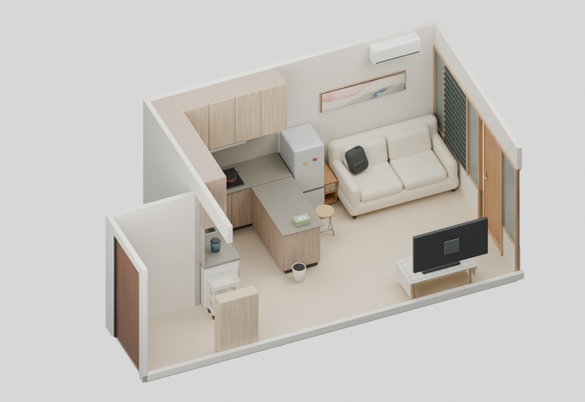
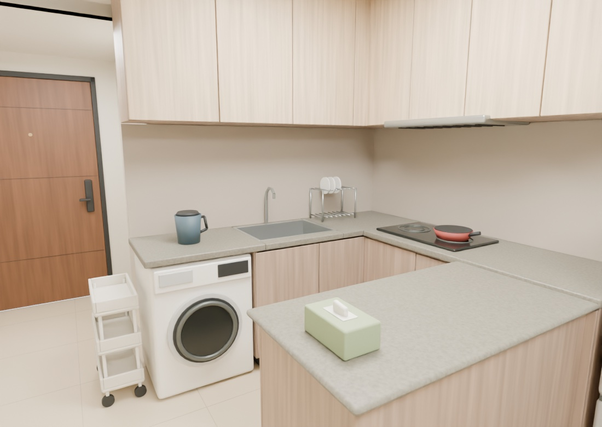
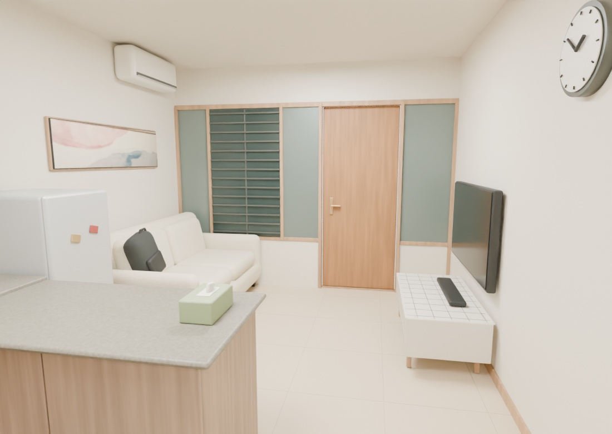
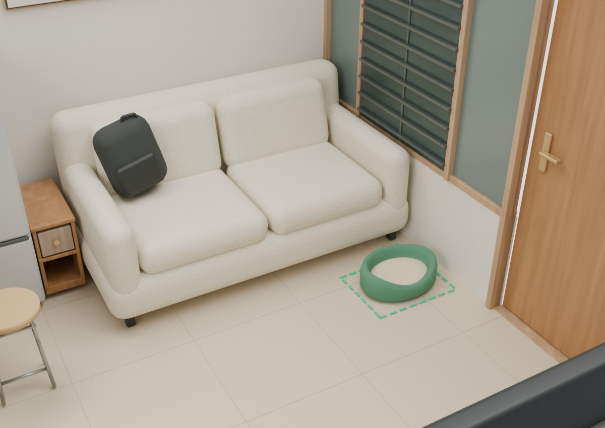
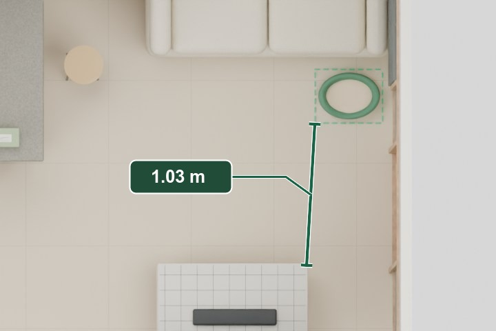

Keep the bed at the sofa’s end
Sofa front · about 0.08 m
The footprint stops about 8 cm short of the sofa base. Placing it by the window-side arm keeps the cat in sight from the sofa and leaves the approach to the other seat open.
Every home has a different layout. Walk through yours with a LiDAR-equipped iPhone or iPad. ScanDesigner captures colour (RGB) and depth so you can reconstruct the room and try a cat bed alongside your own furniture.
Explore the roomChoose a view, such as the sofa or kitchen counter, then switch models. The scan shows the actual surfaces. The Virtual Replica shows the furniture shapes and spacing from the same angle.
The replica follows the dimensions and layout of the scanned room. These Blender views show how the kitchen, sofa and doors fit together before you try a new arrangement.



Reserve a 50 × 40 cm spot in front of the window-side sofa arm. The dashed outline marks the proposed footprint. Rotate the model to see how the bed fits into the room.

The 3D view could not load. The render shows the same placement.
Each line measures the horizontal gap from the edge of the green footprint to a furniture edge or doorjamb in the Virtual Replica.
Sofa front · about 0.08 m
The footprint stops about 8 cm short of the sofa base. Placing it by the window-side arm keeps the cat in sight from the sofa and leaves the approach to the other seat open.

Nearest doorjamb · about 0.18 m
The nearest corner of the footprint sits about 18 cm from the window-side jamb, outside the opening. Try the door through its full swing before settling on the spot.

TV console · about 1.03 m
About a metre separates the nearest corners of the footprint and the TV console. A person approaching the sofa from the TV side can pass in front of the bed. A larger bed extending toward the TV would narrow that gap.

Kitchen peninsula · about 1.99 m
The peninsula edge is about two metres from the footprint. In this position the bed stays at the living-room end, away from the folding stool and the spot where someone stands to use the counter.